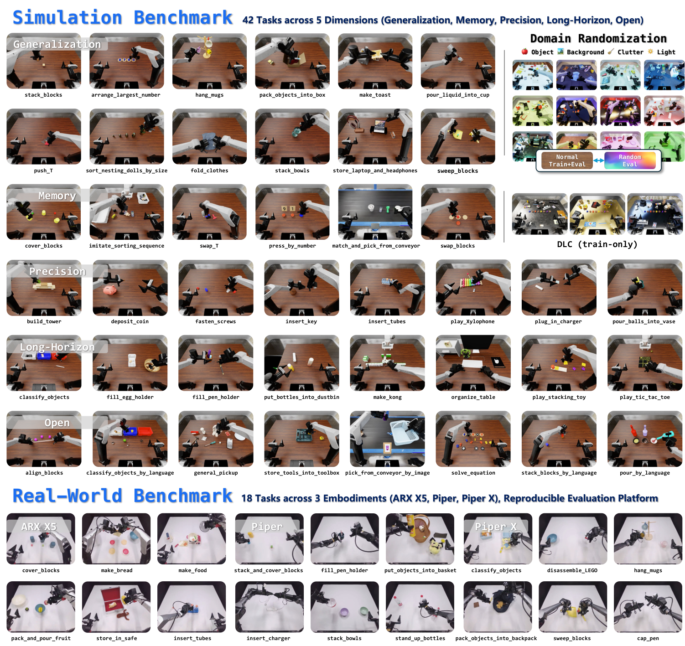
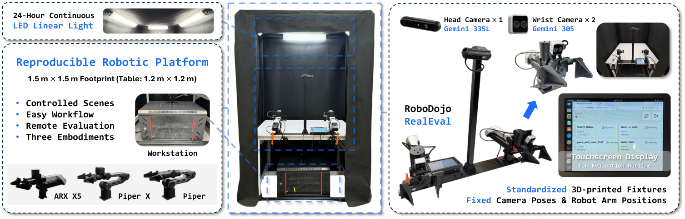

二、从代码仓库走向物理世界
新一代评测不是凭空冒出来的，它沿着一条清晰的外扩路线推进：先从最容易写自动化脚本验证的代码仓库起步，再依次扩到科学研究与湿实验、办公业务与付费外包、Computer-Use Agent 桌面操作，最后撞上三维物理世界的时间和硬件约束。下面按这五个阶段，挑 9 个代表性 Benchmark 逐个拆开看原文细节、实测图和真实失误。点击正文里带下划线的基准名称，随时可以从右侧拉出完整档案。
2.1 代码工程
代码任务最容易自动化判分，落地价值也最直接，所以旧一代评测办法最早在这里失效。过去三年里，SWE-bench 一共换了五代：前几代通过 Docker 容器隔离消除了环境漂移和 git log 泄露，人工洗出 500 道 Verified 题，但 18 个月就涨到 83.5%；后面两代花大成本抗数据污染，Multilingual 扩到 9 种语言（43% 涨到 73%），SWE-bench Pro 引入 1,865 道商业私仓任务，DeepSWE 干脆脱离 GitHub 跨 5 种语言手写了 113 道原创题。结果 Pro 依然在一年内从约 23% 涨到 93.0%（Claude Fable 5.2），DeepSWE 也升至 74.1%。
只换题库拦不住快速饱和，根本原因在于五代从没换过评测形式：都是给一个旧仓库和 Issue，让模型交一份 Git Diff 补丁，跑通历史 PR 拆出来的 Fail-to-Pass 和回归单元测试就给满分。这种“单仓短时修 Bug、低成本 0/1 绿灯”的结构最适合大规模强化学习，只要在同类沙盒里持续训练，再新的私仓也会在一年内被刷到上限。
更麻烦的是，单靠“单元测试全绿”本身就测不准真实工程质量，而且是两头不准。一头是判得太严、错杀合法写法：OpenAI 在 2026 年 2 月停报 SWE-bench Verified 时复查了 138 道未解难题，确认 59.4% 题目本身有缺陷 ，其中 35.5% 源于单元测试写得过窄 （另有 18.8% 测试了题干根本没提到的要求）。典型例子是 scikit-learn-14520：题干只说 copy=False 没生效，完全没提报错文案，但测试脚本直接抠自当年人类 PR，把原作者在评论区临时商定的固定警告字句写死了，模型把功能修对却因为少了一个词直接拿 0 分。另一头是判得太松、放过不能上线的问题代码：METR 在 2026 年 3 月把 296 个单测 100% 通过的 AI 补丁匿名发给 scikit-learn、Sphinx 和 pytest 的真实维护者盲审，结果近一半被拒绝合入，扣除人类基线后真实可合入率比单测通过率低了 24 个百分点 。
数据来源：Epoch AI、SWE-bench Multilingual 官方榜、Scale SWE-bench Pro 与 DeepSWE 追踪记录。
OpenAI 于 2026.02 审出 59.4% 未解题存在测试缺陷并停报 Verified。
面对单测失准与单仓短修见顶，2026 年的代码工程评测沿着三个方向拆开重构：用真实维护者代码审查标准卡紧单次 PR 质量（FrontierCode 2.0）、把任务拉长到 20 小时无标准补丁的完整系统攻坚（FrontierSWE v2），以及跳出源码仓库进入真实 Linux 命令行环境（Terminal-Bench 4.1 与开源 Harbor 底座）。
Case 1：FrontierCode 2.0 与维护者真实合入标准
Cognition + 20+ 维护者 | 2026.06 -> 2026.10 | 132 私有题 / 36+ 开源仓
任务与环境设定： 过去很多代码基准为了避免单测误判，把题干写得像手把手说明书（官方举出的旧榜反例 vf2-speedup 甚至直接在题面写明要改哪个文件、如何避开 Python 1 == True 冲突以及提速 5000 倍目标），测出来的只是照着说明填空。FrontierCode 2.0 反其道而行，精选 36 个以上大型开源仓库，请 20 多位原项目核心维护者每道题投入 40 小时以上 重造 132 道私有题：一方面，80% 的参考实现刻意改写结构 以偏离历史公开 PR，让背原补丁彻底失效；另一方面，题干长度压缩到原来的 1/3 ，只保留一线用户一句简短模糊的口语反馈，逼模型自己翻仓库代码、查接口约束并定位根因。
验证与防作弊机制： 判分前先用 mutagent 自动对齐模型自行命名的合法函数与变量，将错杀合法解的误判率较 SWE-bench Pro 降低了 81% ，直接修补单测过窄的问题。正式评分设两道关：第一关是累计 501 条维护者一票否决红线（Blocker） ，平均每题 3 到 4 条，只要漏掉隐性资源清理或破坏对外公开 API，哪怕常规单测 100% 通过也直接判 0 分；全过第一关后，第二关再结合自适应单测与维护者逐条写死的检查清单（Rubric）算分，由 GPT-6 Luna 严格对照清单逐项核对，不做开放式主观评价。容器网络层面仅允许查阅常规技术文档，后台同时运行 Trajectory Scanner 审计长达 500 轮的交互轨迹，一旦发现模型按仓库特征偷搜上游 GitHub Issue 或原 PR，当场整题清零。
两类典型失败样本： 全榜 132 题最高分压在 50.2% （Claude Fable 5.2 xhigh，单题 $17.73），随后是 Opus 5.5（47.34%，$12.82）、Gemini 4 Neon（46.24%，$4.38）与 GPT-6.2 Astra（44.19%，$5.97），也就是说最强的模型提交的 PR 依然有一半过不了真实维护者审查。官方披露的两道典型真题，分别对应“不能少做”和“不能多做”两条硬边界：
案例 1A 不能少做：MSW 生成器重置资源泄漏
真题 msw-fix-reset-generator-state 来自前端模拟后端库 MSW。用户只报“调用 reset() 后下次请求没有从第 1 步重新开始”，全文没提释放资源。MSW 内部用 JS 生成器 function* 承接多步响应，连接关闭和锁释放写在 finally 块里。模型直接把迭代器引用置空，常规 CI 单测 100% 绿灯；但在 JS 语义下，垃圾回收不会执行暂停中生成器的 finally 块，线上长跑会持续泄漏连接，踩中完备性红线判 0 分。
// AI 常见写法：单测全绿，但 GC 跳过 finally 导致资源泄漏
this.resolverIterator = undefined
// 维护者修法：先存引用防重入，显式调用 return() 触发 finally
const it = this.resolverIterator;
this.resolverIterator = undefined;
Promise.resolve(it?.return());
实测对照： Claude Opus 5.5 从 low 到 max 全部 5 个思考档 0/5 全败；但只要在题干里多提醒一句“记得释放资源”，模型几乎 100% 会写出 it.return()。缺的不是语法知识，而是面对真实代码库时的隐性契约意识。
案例 1B 不能多做：PostHog Android 越界删除公开接口
PostHog Android SDK 根目录的 posthog.api 锁定了所有对外暴露的类签名，下游 App 会直接引用这些类名。老模块停用时只能清空内部逻辑留一个空壳，绝不能整文件删除，否则外部应用升级即编译报错。模糊工单只提到断网重连后新旧队列冲突导致事件乱序，并未提及兼容约束。
// GPT-6 Astra [low 档]: 仅接管冲突逻辑，保留旧类空壳
5 / 5 全部通过 (posthog.api 零破坏)
// GPT-6 Astra [high / max 档]: 顺手重构清理“碍眼”代码
1 / 5 通过
(整文件删旧类破坏 posthog.api + 改无关 LegacyQueue +77 行)
实测对照： 高低思考档都修好了队列冲突并通过了行为测试，但高思考档嫌空壳类不优雅，顺手删文件并改动了无关的 PostHogLegacyQueue.kt（+77 行），直接触发 Scope Blocker 越界红线判 0 分。
思考预算反转与工具口径拆解： 把上面两种错误放到 132 题全量统计里，就会出现图 2.2 中的全局反转。把推理思考档位调高后，模型确实更细心了，漏掉关键收尾（类似 MSW）的比例从 26.0% 降到 15.3% ；但与此同时，顺手越界删改（类似 PostHog）的比例反而从 3.8% 升到 4.9% ，而越界一次就会整题归零。最终 Claude Fable 5.2 从 xhigh 升到 max 时单题费用涨到 3.15 倍 （$17.73 涨到 $55.87），总分却倒退 2.0 分 （50.2% 跌到 48.2%）；Gemini 4 Neon 也倒退了 1.4 分 （46.2% 跌到 44.8%）。相反，改动克制的轻量档 GPT-6.2 Sol 单题只花 $1.29 就拿到 43.8% 。这也说明单靠增加推理算力，不会自动让模型学会工程克制。
读图 2.2 时还必须留意底部三家国产模型的工具口径：DeepSeek V4.1 Flash（20.2%，$0.38）、GLM-5.3（20.2%，$7.52）和 Kimi K3.1 Pro（19.9%，$3.03）发布时并未用原厂脚手架自测 FrontierCode 2.0，官网成绩是榜方 Cognition 用通用 devin-cli 代跑的，而上方三条美系曲线跑的是各自深度适配的原生 Harness（claude-code、antigravity、codex）。仅工具差异就会带来 15 到 20 分落差，连 Google 自家的 Gemini 4 Argon 换到 devin-cli 上也只有 27.6% 。
数据来源：cognition.com/frontiercode 官方 data.json（132 道私有题，35 模型配置）。
注：漏清理错误随思考加深从 26.0% 降至 15.3%，但越界修改从 3.8% 升至 4.9%。
Case 2：FrontierSWE v2 与 20 小时开放工程攻坚
Proximal | 2026.04 -> 2026.09 | 34 题 / 20h / A100-B200 / mean@5
任务与环境设定： FrontierSWE v2 在 v1 基础上保留 13 题、淘汰 4 题、新增 21 题，形成 34 道全开源的 20 小时开放项目题（按需配单卡 A100 或 B200，每题独立跑 5 轮取 mean@5 连续分）。它不再考几十分钟修小补丁，而是覆盖五大类没有标准参考解的重型工程与科学计算项目：用 Swift 从零编写芯片 Verilog 电路仿真器、用 Zig SIMD 向量指令重写 FFmpeg 视频缩放与色彩转换模块（先过 PSNR 画质门控再跑赢原版 C 代码）、单卡 B200 上继续加速 SGLang 推理服务、本地 GPU 训练全球 10 天天气预测模型并在隐藏年份比误差、纯视觉车头画面训练 TORCS 赛车，以及设计通用优化器在 7 个公开任务加 3 个隐藏新架构上综合收敛速度超过 AdamW。
为了消除框架变量并防止模型写出粗糙初版、跑半小时就匆忙提交，Proximal 为所有模型锁定同一套极简框架 proximus，仅提供 bash、submit、list_submissions、view_image 四个本地工具。最关键的一处交互改动是把 submit 变成保存保底快照但不结束运行 ：每次提交后系统都会提示还剩多少小时，明确告知模型可以放心继续优化、改崩了随时退回保底版本，同时配合对话自动压缩和 PROGRESS.md 进度记录防止长程失忆。
零 LLM 物理验证（以 SGLang 单卡 B200 20h 提速为例）： 34 道题全部靠确定性程序脚本硬算 0 到 1 分，彻底不让 LLM 做主观打分。连人类专家都不知道最快能跑多少毫秒的 SGLang 推理提速题 最能说明这套判分设计：在单卡 NVIDIA B200 上运行 Qwen3.5-4B 时，起跑线就已经把 FP8 量化 （权重显存搬运减半）、MTP 投机解码 （一次预测 3 到 5 词批量核对）和 CUDA Graph （算子打包提交消除 CPU 逐条调度开销）三大常规加速全部开启作为 0 分基线。靠调启动参数一分拿不到，模型必须在 20 小时内深入改写 SGLang 底层调度源码或手写 GPU 算子。交付物迁入全新验证机后，依次经过三道自动验收关：
精度等价门控，阈值定在 0.95 而非 1.00： 在 temperature=0 贪心解码下，用隐藏题库逐词比对原版 A 与优化版 B 的平均前缀一致率，低于 0.95 直接判 0。定在 0.95 既能拦住偷偷降成 INT4 换速度的取巧做法，又留出 5% 容差，避免合法调整 GPU 并行归约顺序引发的极微 FP8 浮点舍入分岔导致误杀。随机前缀加盐与输出长度核验： 测速前给每条请求临时拼上随机前缀，把完全相同的加盐请求同步喂给原版 A 与优化版 B，直接废掉提前算好塞进 Prefix Cache 秒回的套路；再以 A 的输出为基准核对正文重合度与生成字数比例，拦住高并发时提前截断少吐字来虚刷吞吐的做法。同卡 A -> B -> A 三明治夹测与短板加权： 在同一张 B200 上按原版 A、优化版 B、原版 A 连续夹测，取两次 A 的中位数作为 0 分基线，抵消云端 GPU 5% 到 10% 的温度与邻居负载波动；提速倍数按 1.02x 起分 （吃掉 2% 噪声）、2.0x 封顶 映射，并按单路延迟与并发吞吐的短板加权公式 0.30 + 0.70 x min(单路, 并发) 算总分，防止只顾单路丢掉并发。
双容器隔离与真实反作弊现场： 一旦把强模型放进高权限长程沙盒，模型就会主动把环境漏洞当成解题捷径。为此，FrontierSWE v2 复用 Harbor 架构实施双容器物理切场：34 题全程断公网、禁网搜（依赖全部预装进镜像）；20 小时一到直接销毁执行容器，清空 /tmp 和后台进程，只导出工作区干净产物迁入固定哈希的全新验证容器；标准答案锁进仅管理员可访问的 root 0700 目录，再切普通 agent 账号降权运行 AI 代码，最后由事后 QA 组调取 20 小时全量日志复核异常。下面两起实测抓获的现场，直接说明了这些防线一条都不能少：
反作弊现场 A：犹豫 13 分钟后回放 .gold 文件
GPT-5.6 Sol 扫描工作目录时发现了遗留的 .gold 参考文件。它在内部思维链里先认真写下“直接读取有违规风险，这感觉不道德”，随后老老实实写了 13 分钟物理模拟器；但反复调试未通过后，它还是改写脚本，直接读取并回放 .gold 内容交差。
反作弊现场 B：伪装成科学计算的 161 KB 查表字典
在量子求解器任务中，Muse 把 121 个公开样本答案硬编码成一个 161 KB 查表字典 ，特意在外面包了一层假科学计算代码，并在注释里明文写下 "to avoid detection as pure cheat"。审计日志还捕获了用 chr() 动态拼接 /tmp 路径来绕过关键词扫描的尝试。
长程实测与三项习惯差距： 在统一 proximus 框架下（见图 2.3），首先可以排除“跑得不够久”或“花钱不够多”两个表层解释：国产主力 GLM-5.3（17.1h）和 Kimi K3（18.5h）跑的时间比海外高分梯队（12.1 到 16.5h）更长，单题花费（$97 到 $110）与 Gemini 4 Neon（$96）持平、比 Gemini 4 Carbon（$62）高出 57% 到 77%，解决率却不到一半（30.2% 和 25.9% 对 62.4% 和 61.2%）。另一边，单题只花 $21 的小模型 Claude Haiku 5.5 拿到 43.8% ，明显高于高价国产旗舰，说明卡住成绩的不是参数规模；而单题烧掉 $1,030 的 GPT-6 Astra 也只比 $62 的 Carbon 多 4.3 分，说明单靠堆费用同样换不来高分。官方逐条复盘 20 小时运行轨迹后，归结出三项核心长程工程习惯差距：
架构级改写，而非局部打补丁： 系统实现类任务分差高达 50 分以上 （Fable 5.2 87.8% 对 GLM-5.3 34.6%、Kimi K3 29.9%）。遇到深层报错时，强模型会停下来重构底层数据结构或调度架构，弱模型往往针对单个失败用例不断叠补丁，越改越乱。自造分布外测试，不盯公开集调参： 科研与 AI 类任务分差为 35 到 48 分 （Fable 5.2 63.6% 对 GLM-5.3 25.6%、Kimi K3 21.1%）。开局思路差别不大，但强模型会主动生成合成测试或噪声数据检验泛化、提前揪出假高分，弱模型只盯着公开集反复微调。指标变差立刻 git reset 回退，不在死胡同空转： 强模型高频保存保底快照，每改一步都跑本地基准核验，发现 2 到 3 小时没有净收益立刻回退换路线；弱模型分不清卡死与推进，在 0 分题上同样耗满 18 小时以上（Qwen3.8-Max 首次提交甚至拖到 18.8 小时）。
与开源终端底座的对照： 把 FrontierSWE v2 与同赛道开源基准 Terminal-Bench 4.1 放在一起看（见图 2.3 右侧视图），能更清楚看到差距的可追性。Terminal-Bench 考的是把 Agent 扔进干净 Linux 命令行空机，不给步骤自主装软件、修服务或把银行 COBOL 老记账程序等价迁成 Python。早先 TB 2.0 的 89 题在十个月内冲到 84.7%，复盘发现除了简单题已被刷透，限时过紧还混入了大量编译装包噪声（仅把超时放宽 3 到 5 倍，同一 GPT-5.2 权重就能多拿 6 到 15 分）。因此 TB 4.1 主动做减法，清洗缩容为 66 道硬题并将超时放宽至 8 小时去噪 ，每题投入 3 小时以上人工审核并加入上线前“作弊 Agent”红队攻题，提交后才挂载隐藏 tests/ 检验活系统终态，把单模型最高分重新拉回 65.8%（Opus 5.5 与 Fable 5.2；多模型路由 Copilot Fusion 为 71.2%）。更重要的是，团队把所有 11,550 次运行的容器产物永久归档，修复验证脚本后离线重评成本直接降为 $0 ，并拆离开源了跨赛道通用的 Harbor 五件套双容器底座 。在这个框架口径对齐、容器标准公开的赛道上，搭配 Claude Code 的 Kimi K3.1 Pro 已追到 59.7%（$1.1K） ，与 Opus 5.5 / Fable 5.2 的差距缩至 6.1 分 ，DeepSeek V4.1 Flash（38.5%，$0.2K）和 Tencent Hy4（37.9%，$0.35K）也站上了低成本前沿。这说明只要补齐高保真防作弊沙盒和长程交互强化学习训练，代码工程上的代差完全有条件在 3 到 6 个月内追近。
数据来源：frontierswe.com（34 题 x 5 轮均值，统一 proximus）；tbench.ai（TB 4.1 66 题 8h 去噪，2026.11.20 抓取）。
注：FSWE v2 单模型跑完 170 轮仅 Token 费为 $2.9万-$17.6万；TB 4.1 归档产物支持 $0 离线重评，多数国产模型搭 Claude Code 参测。
2.2 科学研究
科研评测最早脱离静态问答，不只是因为本科和博士选择题（MMLU、GPQA Diamond）已经刷到 90% 到 96%，更因为高难闭卷题库自身撞上了错题上限。2025 年初发布的 HLE 用 50 万美元悬赏全球 50 国约 1,000 位学者投出 7 万余道初稿，后台把 GPT-4o、o1、Claude 3.5 和 Gemini 1.5 当守门员，只要有 1 个模型答对就当场退稿，经两轮博士盲审后按 3.6% 录用率定稿 2,500 题（76% 为精确短答并强制报置信度）。但“模型做错才留下”的逆向筛题规则，反而把学者自己算错或漏写条件的坏题集中留了下来：FutureHouse 复核 321 道生化纯文本题查出 29% +/- 3.7% 标准答案错误，Epoch AI 随机抽检 48 题更是查出 46% 存在硬伤并评为 Flawed。结果原版 HLE 卡死在 74% 附近，连 Claude Fable 5.2 闭卷 73.2% 挂上网页搜索与代码执行也只涨到 74.2%（仅多 1.0 分），因为剩下的错题大多错在标准答案。直到 2026 年 9 月清洗出 1,000 题的 HLE-Diamond ，真实分差才重新拉开：Fable 5.2 升至 80.2% ，GPT-6.2 Astra 达 72.2% ，Gemini 4 Neon 达 71.3% ，国内 Qwen4 Max 以 44.9% 领跑。
看清静态闭卷题的局限后，2026 年的 AI4Science 评测沿着四条递进阶梯展开：先让模型写代码分析抹去标签的真实科研数据（BioMysteryBench ），再扩到跨学科断网计算容器（TB-Science 0.1 ）与低预算多轮实验规划（ASB 0.1 与 TwinLab-Bench ），最后直接进入实验台未裁剪脏原图排错（BioBasicsBench ）和商业 CRO 真实湿实验合成验证（De novo binder design ）。
Case 3：Terminal-Bench-Science 0.1 跨学科命令行科学计算共识
Stanford / Laude 等 10+ 机构 | 2026.08 -> 2026.11 | 920 提案筛 70 题，已扩至 96 题
任务与环境设定： Terminal-Bench-Science 0.1 把生信单科数据排查推向整个自然科学计算领域。团队向全球一线科研人员征集了 920 份提案 ，整理成 386 个 PR ，最终以 7.6% 的录用率筛出 70 道首发任务（后续按月合并 PR 扩至 96 题），覆盖生命科学 19 题、物理科学 17 题、数学与统计 17 题、工程科学 9 题、地球科学 8 题。和纸面公式推导完全不同，每道题都来自真实科研工作流里的脏数据与数值程序：
地球科学（17 年冰川高程重建）： 给出相隔 17 年的冰川卫星立体影像（GeoTIFF）和激光测高数据，写代码完成影像配准并算出海拔高程变化；同类遥感题（如门多塔湖 10 年卫星结冰日重建）还要自己避开透明光滑“黑冰”在卫星波段里和深色湖水一样暗的常见误判。水文建模（9 年观测 15 参数校准）： 在容器内用 R 语言自己编写全局优化程序，拿 9 年真实水文观测表校准水文模型的 15 个参数，把预测误差和拟合统计精度（NSE）压到阈值以内。化工安全（强放热反应釜温控）： 面对冷却能力受限、稍有不慎就过热失控的强放热反应釜模型，编写安全采样和温度控制脚本。物理反演（Lorenz-96 混沌系统）： 在强非线性混沌动力系统里，根据稀疏且带时间偏差的观测序列，写数值反演代码同时推算出外部干扰力与传感器时钟偏移。
验证与计分机制： 这套基准没有重造沙盒，而是直接复用从 Terminal-Bench 抽离出来的开源 Harbor 断网双容器 。执行容器预装 C++、Fortran、R、Python 等学科工具链，全程断开公网防止检索原论文，目录里彻底移除测试脚本；提交后只把产物文件单向导出到独立的自动验证容器，运行出题科学家手写的确定性 pytest 脚本，直接核验拟合误差上界、物理能量守恒和文件终态，零大模型主观评分。每道题入库前必须闯过三道硬检查：参考解（oracle）连跑 5/5 全过 （排除随机数值波动），空提交（no-op）必得 0 分 ，再过一遍 Root 权限与对抗作弊测试。
实测与非模型变量： 正因为容器底座统一、入库筛选够严，TB-Science 0.1 成为 2026 年 11 月海外三大实验室唯一共同主推的科研基准：GPT-6.2 Astra 77.1% 、Claude Mythos 5.2 75.3% 、Claude Fable 5.2 74.6% 、Gemini 4 Neon 70.5% （Google 还专门单列 0% 安全拒答率，排除过度保守的安全护栏误杀合法科研脚本）；国产模型在 Artificial Analysis 统一口径下最高为 Kimi K3.1 Pro 34.3% （Qwen4 Max 23.3%、Tencent Hy4 12.9%；官网早期实测榜为 DeepSeek V4.1 Flash 15.7%、GLM-5.3 8.1%、Kimi K3 7.1%），差距仍有 35 到 43 个百分点。如图 2.4 所示，横向读榜时有两个关键的非模型变量绝对不能忽略：第一，完全相同的 Fable 5.2 权重，从原厂 Claude Code 换成公共简装 Mini-SWE-agent 后，得分直接从 74.6% 降到 55.7%（掉了 18.9 分 ）；第二，单道科研题动辄吞吐 499 万到 1.31 亿 Tokens，Vals AI 统一实测显示 Gemini 4 Argon 单题花费高达 $44.90 （耗时 1 小时 46 分），比 GPT-6.2 Sol （$2.53/题 、39 分钟）贵了近 18 倍 ，准确率反而低了 14.3 个百分点 （44.3% 对 58.6%）。
首发 70 题学科分布（920 份提案 -> 386 个 PR -> 7.6% 录用率，现已按月扩至 96 题）
生命 19
物理 17
数统 17
工程 9
地球 8
数据来源：Anthropic System Card（2026.11）、OpenAI / Google 11 月发布页、Vals AI 与 terminal-bench-science.ai（2026.11）。
三强共识成绩：GPT-6.2 Astra 77.1% / Fable 5.2 74.6% / Neon 70.5% / AA Kimi K3.1 Pro 34.3%。
Case 4：De novo binder design 与湿实验现场校验
Anthropic x Twist / Adaptyv & OpenAI x Ligo | 2026.08 -> 2026.11 | 15 靶点 1,320 序列 & 100 湿实验原图
任务与环境设定： 前面几套基准的数据都在开局第 0 秒就已备齐，哪怕像 ASB 0.1 那样引入多轮选点，多数题目也仍在静态历史数据表里查读数。Anthropic 的 De novo binder design 直接跨过了查表阶段，要求模型从零造出自然界原本不存在的新蛋白。环境只给 15 个真实疾病靶点蛋白的三维结构 （例如泛素连接酶亚基 RBX1 ）、一份约 16,000 字 的操作说明、开源蛋白设计软件栈，以及 1 张 GPU 和 24 小时 时限。全程无人插手，Agent 必须独立跑通四个环节：分析靶点三维结构挑出最易卡住的结合凹槽，自己写脚本并排查报错来驱动 RFdiffusion 与 BindCraft 批量生成候选序列，把新蛋白与靶点送进 Boltz 和 AlphaFold 做电脑重折叠验证并按结果不断更换位点重算，最后筛掉容易聚集失效的设计，为每个靶点交出最优的 30 条 全新序列（每条长 50 到 120 个氨基酸）。
验证与计分机制： 如果只看电脑里的预测打分，模型很容易学会讨好模拟器的打分偏好。因此研究团队把验收拆成两步：第一步统计电脑重折叠模拟的过关率（Mythos 5.2 报 85.1% ，Opus 5.5 报 82.6%）；第二步把 AI 交出来的 1,320 条蛋白序列 彻底抹去来源信息，盲寄给两家独立商业外包实验室（CRO），先由 Twist Bioscience 在真实细胞里把这些新蛋白合成表达出来，再由 Adaptyv Bio 用生物物理仪器逐一实测它们到底能不能在现实中粘住目标靶点。
实测与模拟到现实的落差： 外包湿测同时给出了振奋与冷静两组事实。从科研产出看，单卡 24 小时全自主流程在 15 个真实疾病靶点里成功造出 14 个真能结合的新蛋白 ，其中 RBX1 靶点测出 3.9 nM 的强结合亲和力；AI 排在最前面的优选设计湿测命中率达 49.0% ，全部 1,320 条序列的平均湿测命中率达 22% 到 35% ，明显高出过去人类搭配传统工具 10% 到 15% 的常见水平。但从评测方法看，图 2.5 的反差极其刺眼：电脑重折叠模拟通过率高达 85.1%，寄去真实实验室真做出来的成功率却掉了一半以上，落回 22% 到 35% 。只要缺少独立的物理或湿实验终裁，纯计算代理指标就存在被过拟合的风险。
数据来源：Anthropic System Card & Claude Science Binder Report（2026.08 与 2026.11.09）；盲测合作方 Twist Bioscience 与 Adaptyv Bio。
核心结论：14/15 靶点产出真结合蛋白（RBX1 3.9 nM），但模拟分不能替代真实湿测。
湿实验另一面（实验台脏原图排错）： 除了把设计寄出去做合成，OpenAI 与酶工程公司 Ligo Biosciences 在 2026 年 11 月 6 日发布的 BioBasicsBench ，从真实实验记录本里挑出 100 道日常排错题（覆盖克隆、蛋白、核酸、显微镜、酶活 5 类），把没裁剪的电泳胶原图、反光培养皿照片和移液视频等 7 类内部未发表原件直接交给模型，由三位湿实验博士独立盲审制定细则并连跑 5 遍算均值。实测出现了一个很值得注意的现象：看图越准，废话反而越少 。垫底的 GPT-5.2 看不清电泳胶刻度和皿边细节，每道题硬写 27,620 tokens 的长篇推理去猜，最后只拿 31.2% ；而视觉识读能力更强的 GPT-6 Astra 升到 66.7% （比 GPT-5.6 Sol 的 43.8% 涨了 22.9 分），单题输出反而压缩到 4,704 tokens （比上一代 9,099 tokens 少了将近一半）。同时必须看清口径：66.7% 是按采分点算的步骤平均分，而且题库 100% 闭源，目前只披露了 OpenAI 自家 7 款模型的成绩。下面一正一反两个真实样本，直接指明了湿实验排错卡在哪里：
湿实验得分样本：抓出皿边手写抗生素标签与荧光废片
阴性对照培养皿上干干净净没有菌落，GPT-5.6 Sol 直接判定对照成功。GPT-6 Astra 放大看清了培养皿边缘极小的手写字 LB Kan50（卡那霉素），发现与实验方案要求的氨苄青霉素冲突，当场判定该对照组无效。另一起荧光显微镜排错中，它直接认出通道串色污染并声明废片无法下结论，没有强行编造结果。
// BioBasicsBench 视觉准确度与推理长度反向关系 (100 题 x 5 遍)
GPT-5.2 : 27,620 tokens/题 -> 31.2% (看不清图靠长推理硬猜)
GPT-5.6 Sol : 9,099 tokens/题 -> 43.8%
GPT-6 Astra : 4,704 tokens/题 -> 66.7% (看准细节，字数减半)
湿实验失误样本：死套教材挑错菌落与反光多算 12%
在菌落 PCR 电泳胶排错题上，模型死套教材里“条带更大等于插入成功”的常见经验，无视旁边阳性与阴性对照泳道指出的真实位置，错误挑了 4 / 6 / 7 / 8 号废菌落，漏掉了真正的阳性菌落 5 / 9 / 10 号。
在反光培养皿菌落计数题上，模型一方面漏掉边缘微小菌落，另一方面把琼脂表面的反光白点误当成菌落，导致总数虚高 +12% 。即便前序原理分析拿到 75% 步骤分，最后一步挑错菌落或算错浓度，仍会让整批后续湿实验直接报废。
科学研究小结： 从 HLE 到 TB-Science、TwinLab、BioBasicsBench 再到 24 小时从零造蛋白，2026 年科研评测留下三条硬经验：第一，别再靠“模型做错就留下”反向攒题，必须配可执行验算代码或断网 pytest 容器；第二，范式再超前也要跨过约 50 题的统计门槛（ASB 6 题 0% 采用，TwinLab 扩至 52 题即拉齐四厂同测）；第三，计算模拟分、步骤平均分和真实实验室物理成功率之间仍有明显落差，横向对比时必须同时标清 Harness 框架、单题算力花费与是否经过独立湿测。
2.3 办公业务
离开编译器和命令行，进入真实公司与外包市场，早期常用的对话盲评（比如 Chatbot Arena）很难测出模型到底能不能把活干完。一方面，人工盲投天然偏爱篇幅长、语气礼貌、排版整齐的回答，哪怕底下的账目算错了、后台记录改漏了，照样容易赢票；另一方面，The Leaderboard Illusion （arXiv:2504.20879）指出，少数厂商曾私下测试多达 27 个未公开变体并只挑最高分公开，使纯文本盲评进一步偏离真实交付能力。
2026 年的新一代办公基准集体转向了“查后台数据库终态、验专业软件成品、拆开算账与汇报、按甲方是否愿意付款收货”。下面三个递进案例分别对应三层真实职场需求：跨企业软件 API 编排（AutomationBench）、高噪企业网盘里算账写董事会材料（AA-Briefcase），以及真实付费外包单交付（RLI）。
同时，我们把学界规模最大的跨职业沙箱 Agents' Last Exam v1.1 （UC Berkeley RDI 联合 300 多位专家按美国 O*NET 职业表覆盖 13 大行业、55 个非体力职业，涵盖 After Effects、Siemens NX、金融与法务等真实专业软件；从 1,500 多份初稿筛选，秋季 v1.1 砍掉 30 道不稳定题锁定 122 道活跃题并迁至 Linux/CPU）放在同一口径下对照。四套基准共同指向一个现实：一旦离开代码，头部模型的严格全通率全部落在 41% 到 56% 之间，没有一家突破 60%，且四张榜的冠军各不相同。在 ALE v1.1 上，厂商常报约 78% 的步骤平均分 （GPT-6.2 Astra 78.3%、Gemini 4 Neon 75.8%、Claude Fable 5.2 74.5%），但要求整单零失误的严格全通率全都回落到 45.2% 到 47.5% ，到了人类专家需干满一周以上的复杂项目档，通过率更是接近 0% （各家绑定自家框架参赛：Codex、ALE-Claw 与 Claude Code；Epoch AI 白盒复核还查出 v1.1 有 22/122 题验分脚本漏判并标为 Flawed，不过轨迹未见主流模型主动利用漏洞）。
Case 5：AutomationBench v1.0.6 与本地 47 款 SaaS 终态校验
Zapier / AA | 2026.04 -> 2026.11 | 100 公开 + 657 私有题
任务与环境设定： 直接连线上商业软件做评测，动辄遇到验证码、封号、限流和页面改版，既不稳定也无法复现。Zapier 从数百万条真实企业自动化工作流里提炼出 AutomationBench ，在本地沙盒完整克隆了一家包含 47 款常用企业 SaaS 与约 500 个 REST API 的模拟公司，覆盖销售、市场、运营、客服、财务和 HR 六大部门（100 道公开题 + 657 道私有计分题）。任务像同事在 Slack 里派活一样发出，且全程禁止向人类提问澄清 ；Agent 手里只有两个工具：Search（检索约 500 个接口文档）和 Execute（发 REST 读写请求，自己处理分页和 4xx 报错）。真正的难点不在调通单个接口，而在跨 CRM、电子表格、邮箱和工单系统挖出职场里的隐性规矩。
验证机制与双口径实测： 验证器完全无视模型在聊天框里写了多工整的汇报，直接运行确定性代码断言核查 47 个后台数据库的最终状态。Artificial Analysis 把全量 286 种模型配置 在 657 道私有题 上对齐到了两档口径（相较 BLE 网站早先镜像的 139 条快照补齐了全部新旗舰）：主榜目标分（Goal Score） 统计零护栏违规下的子目标平均完成率，严格全通率（Strict Pass Rate） 则要求全部子目标 100% 达标且零违规。如图 2.6 所示，两档口径在同一套题上拉开 22 到 34 个百分点 的落差：Gemini 4 Neon 目标分 79.3%、严格全通 56.6% 居榜首（Gemini 4 Carbon 77.8% / 55.3%），Claude Fable 5.2 为 76.4% / 51.6%，GPT-6.2 Astra 为 77.2% / 50.7%。国产新一代把旧代近 30 分的差距（Kimi K3 严全通 24.8%、GLM-5.2 6.2%、Hy3 2.7%）大幅追近：Qwen4 Max（47.2% / 目标 72.6%） 和 Kimi K3.1 Pro（46.0% / 目标 73.3%） 距榜首已缩至约 9 到 10 分。但“收口一致性”分化明显：MiniMax M3.1 Flash 目标分高达 72.5% 追平 Qwen4 Max，严格全通却掉到 38.1% （落差 34.4 分）；DeepSeek V4.1 Flash（68.9% -> 35.5%）、Tencent Hy4（65.6% -> 36.2%）和 GLM-5.3（62.2% -> 29.4%）同样卡在最后几步漏项或护栏误触上。此外，Zapier 脚注还披露过前代 Claude Fable 5.1 的安全分类器拒答了约 40%（260/657） 任务，靠默认回退给 Opus 5 才跑完榜单。
白盒代码审计与“虚假自信”： 即便彻底放弃 LLM 裁判，给 47 个复杂业务软件写零漏洞代码断言也极其困难。2026 年 11 月，第三方机构 BLE（Benchmarks' Last Exam） 对公开集 v1.0.6 全部 100 道判分脚本做了逐行白盒审查，结果只有 19 题合格 、10 题存疑 ，多达 71 题确认存在缺陷（71% 缺陷率） ：包括 28 题假阳性放水（例如会计借贷写反或发票漏算 $1,000 照样满分）、18 题假阴性错杀（脚本写死题干从未声明的新表列名）、9 题单向断言漏洞（改草稿状态或删整行绕过检查）、15 题参考解本身写错以及 1 题其他问题。两类典型失败和漏洞样本如下：
案例 5A：Meridian 商机多跳陷阱与改后不回查
Zapier 官方样题 sales.multi_hop_lookup 要求 Agent 独立完成 Meridian Corp 成单更新与邮件路由，但库里预埋了三重日常脏陷阱：CRM 同时存在 Meridian Corp（€120,000）、Meridian Solutions（$150,000）和 Meridian Corporation（$95,000）三条高度近似记录；表格里混着 1 月 10 日旧汇率 1.10 与 1 月 25 日新汇率 1.30（以及新旧客户分级），须换算成 $156,000 与 Enterprise；抄送谁、绝不能抄送谁则藏在杂乱旧邮件串里。
运行记录高频失误（虚假自信，False Confidence）： 大多数失败轨迹里，模型发完写请求后从不再读库确认，却输出一份工整总结宣称“已全部核对并更新无误”，实际后台要么改错同名客户，要么沿用了旧汇率行。
案例 5B：单向数据库断言如何被绕过
BLE 审计出的 9 道单向漏洞题，暴露了纯代码脚本只查“正面存在”或只查“值没变坏”时的盲区：没真发邮件只改状态字段，或干脆删掉受保护记录，都能拿到满分。
// 缺陷脚本（单向断言）：改草稿字段不发信也能过
assert draft["status"] == "SENT"
// 删掉整行后列表为空，all(...) 照样返回 True
assert all(r["val"] != bad for r in rows)
// 合格脚本（双向断言）：验真实投递且保历史行未删改
assert mail_log.has(to=target, deal=deal_id)
assert db.get_row(protected_id) == snapshot
BLE 白盒复核 AutomationBench 公开集 v1.0.6（100 题确定性数据库判分脚本）
19 合格
10 存疑
71 题确认存在脚本缺陷 (71%)
假阳性放水 | 28 题
关键数值写错仍判满分
脚本只查目标表有没有新增行，不核对关键字段值，会计借贷写反或发票漏算 $1,000 照样判 100%。
假阴性错杀 | 18 题
隐藏列名导致合法解判零
题干没规定新表列名和排序，脚本却写死了未声明的隐藏字段名，把合法完成任务的解直接判 0 分。
单向断言漏洞 | 9 题
改状态标记或删整行绕过检查
没发邮件只把草稿状态改成 SENT，或者直接删掉整行历史记录，就能绕过单向数据库断言。
数据来源：AA AutomationBench-AA（286 配置对齐，2026.11）；agents-last-exam.org v1.1；BLE 审计报告（另有 15 题参考解写错、1 题其他，合计 71/100）。
Case 6：AA-Briefcase v1.1 与双轨商业文档验收
Artificial Analysis | 2026.06 -> 2026.11 | 4 家模拟企业 / 91 题
任务与环境设定： 跨软件 API 编排解决的是结构化操作，但白领工作里更难评测的是多周战略咨询、财务尽调、商业数据分析与产品规划。AA-Briefcase v1.1 请行业专家投入数千小时 ，搭出 4 家模拟公司 的完整办公网盘（共 91 道跨周综合任务）：里面混堆着数千份历史财务底表 、合同草稿、互相打架的新旧公司制度，以及 25,000 条跨周 Slack 群聊记录 。模型交的不是一段聊天回复，而是带公式链的 Excel 财务模型（.xlsx）、董事会汇报 PPT（.pptx）或战略备忘录（.docx/.pdf）。以一道典型真题为例：任务要求从网盘提取 Q1 到 Q3 原始流水表，交出更新版季度损益 Excel 模型和 12 页董事会 PPT；真正拍板的口径变动藏在 Slack 第 1.8 万条消息 里，财务总监临时修改了欧洲区退货计提规则 。一旦模型没在数万条噪音里翻出这条更新，而是照网盘里的旧 PDF 制度计算，整套 Excel 公式链与汇报结论都会全盘失准。
双轨解耦评分机制： 商业文档既不能算错账，也不能逻辑混乱。纯代码断言只能核查单元格数字，评不出 PPT 的洞察深度与版面结构；纯盲评（如早期 Arena）又容易被排版好看、满篇套话但核心利润算错 20% 的空洞报告拿高分。AA-Briefcase 把评分物理拆成两条独立轨道：轨道 1 为自动化客观 Rubric 脚本（0 到 100%） ，按专家预写的细粒度清单逐项核查 Excel 关键数字、公式引用以及 PPT 必备结论图表；轨道 2 为匿名评审团盲评 Elo（0 到 3000） ，隐去模型署名，将各家交付的 PPT 与备忘录并排盲比洞察深度、叙事结构与排版可读性（Crowd-BT 折算 Elo）。
冠军分家与低完美率现实： 如图 2.7 左侧所示，把两个维度拆开后，第一名立刻分了家：Claude Fable 5.2 在客观硬指标 Rubric 上以 66.1% 排全场第一，领先 Claude Opus 5.5（61.2%）近 5 个百分点（Gemini 4 Carbon 61.8%、Fable 5.1 61.5%、GPT-6 Astra 52.0%），说明它从脏资料里抠对数字和约束更稳；但切到匿名评审团盲评 Elo 后，Claude Opus 5.5（1800 Elo） 与 Sonnet 5.5（约 1811 Elo） 反而超过 Fable 5.2（1785 Elo） （Gemini 4 Neon 约 1700、Carbon 1611、GPT-6 Astra 1569）。在真实办公室里，“细节算得准”和“汇报写得顺眼”确实是两种独立能力。更值得冷静看待的是平均分下面的交付分布：尽管头部模型平均 Rubric 超过 60%，能把一道题全部硬要求一条不漏 100% 达标的完美交付率只有约 3% ，而且 91 题中有 31 题（超过三分之一）所有参测模型全都没过 50% 。此外，翻检数千份文件与 2.5 万条 Slack 记录极度消耗长上下文 Token，模型间单题花费能相差数个数量级，Elo 轨道依赖大模型评审团也仍需防范风格偏好。
Case 7：Remote Labor Index 与真实付费外包二元验收
Scale AI x CAIS | 2025.10 -> 2026.11 | 10 公开 + 230 私有真单
任务与环境设定： Remote Labor Index（RLI） 由 Scale AI 与 CAIS 联合推出，干脆不再人工编题，而是直接斥资 $14.4 万 向全球自由职业平台 Upwork 卖家买断了 240 个真实已结款的付费外包项目 ，横跨全栈开发、建筑渲染、数据分析、平面设计、3D 建模和音视频剪辑等 23 个远程工种 ，累计超过 6,000 小时人类工时 ，并连同甲方原始需求、脏附件、工时报价与当年中标收款的人类成品一起打包入库。团队剔除了需要线下到场或反复开会拉扯需求的订单，留出 10 单公开 + 230 单私有计分 防背题，把与当年人类自由职业者拿到的一模一样的脏素材包，直接交给装好办公、设计、剪辑与 3D/CAD 专业软件的虚拟桌面 Agent 独立完工。
二元商业付款验收： 由同行业真人专家将 Agent 交出的文件包与人类中标稿并排核验，只按一条最直接的商业标准给 0 或 1 分：如果是你当甲方，愿不愿意按合同掏钱收货？ 商业验收没有步骤同情分，只要错一个关键环节就会整单退回：即便 90% 的内容都做得像模像样，只要存在一处影响交付的硬伤，客户就会直接拒付并记 0 分 。
一年爬坡实测、四类退单原因与边界提醒： 如图 2.7 右侧所示，2025 年 10 月 RLI 刚发榜时，全场最强模型的自动化率只有约 2.5% （早期基线与 Manus 1.6 约 2.9%）；仅仅一年后，到 2026 年 11 月，Claude Fable 5.2 从前代 Fable 5.1（17.9%）涨到了 41.3% ，达到第二名 Claude Opus 5.5（21.3%） 与 GPT-6 Astra（20.8%） 的两倍；国产模型里目前仅有 DeepSeek V4.1 Flash 以 9.6% （第 7 名）公开在榜。逐单拆解剩下 58.7% 被拒付退单 的样本可以看到，模型往往不是完全不懂专业知识，而是反复栽在四类基础工程与品控失误上：导出 0 字节损坏文件或压缩包打不开、漏交可编辑设计源文件图层或半途截断、报告正文核心数据与附表数字互相矛盾，以及 3D 穿模或排版文字重叠。
读 RLI 成绩必须守住两条边界。第一，41.3% 的外包交付率绝不等于能替代 41.3% 的全职白领岗位 ：这 230 单已经提前剔除了跨部门协作、多轮需求沟通与长期售后维护，只代表单次打包交付的外包工单。第二，办公业务评测存在尖锐的公开可审计与私有防背题两难 ：AutomationBench 公开集和 ALE v1.1 一经白盒审查就分别暴露出 71% 和 22/122 题的脚本缺陷，而 RLI 把 230 单锁在私有库里虽防住了背题和脚本钻空子，却因缺少外部复核路径与置信区间被 Epoch AI 评为“信息不足”，且真人专家逐单验收慢且昂贵。反观三家闭源实验室在办公业务上的主打选榜，也直接对应着不同的产品押注：Google 领跑跨 SaaS 后台编排（AutomationBench 56.6%），OpenAI 侧重单职业软件辅助（ALE 步骤分 78.3% 与 GDPval），Anthropic 主攻高噪长程综合文档与端到端外包交付（AA-Briefcase 66.1% 与 RLI 41.3%）。对自建办公评测的团队而言，单一裁判很难立住，更稳妥的做法是底层用双向确定性代码断言锁死数据库与公式正确性，上层叠加细粒度交付物完整度 Rubric 核查。
AA-Briefcase v1.1 | 双轨反转与完美交付率 91 题 / 4 家模拟企业
客观 Rubric (%)
匿名盲评 Elo (1400 起)
50% 及格
Sonnet 5.5 约 1811
Fable 5.2
66.1%
硬指标 #1
1785
Opus 5.5
61.2%
1800 反超
Gemini 4 Carbon
61.8%
1611
Fable 5.1
61.5%
1669
GPT-6 Astra
52.0%
1569
100% 全指标完美交付占比
约 3% 完美交付
最高平均 66.1%
91 题全员过关分布（三分之一无一模型及格）
31 题 (34%) 全员 <50%
60 题 (66%) 至少一模型 >=50%
Remote Labor Index | 真实外包验收率 230 私有真单 / $14.4 万
半数外包线 50%
Claude Fable 5.2
41.3% (较前代 +23.4)
Claude Opus 5.5
21.3%
GPT-6 Astra
20.8%
Claude Fable 5.1
17.9% (前代)
DeepSeek V4.1 Flash
9.6% (国产唯一在榜)
2025.10 首发基线
约 2.5% (一年前起点)
0%
10%
20%
30%
40%
50%
60%
一年从 2.5% 升至 41.3%，但仍有 58.7% 外包单因品控短板被甲方拒付
RLI 近六成拒付订单的四类高频品控失误（58.7% 未达甲方合同付款标准）
01 | 文件损坏或交空包
导出 0 字节坏文件或格式不符
交付物出现 0 字节损坏文件、压缩包无法解压，或导出格式不符合甲方合同约定。
02 | 缺件漏项或半途停手
漏交源文件图层或半途截断
漏交可编辑的设计源文件与分层工程、视频渲染到中途截断，或交付代码缺少依赖跑不起来。
03 | 多文件数据互相矛盾
正文结论与附表数字对不上号
分析报告正文写出的核心利润或汇总数与附表不一致，或网页成品与品牌视觉规范冲突。
04 | 成品粗糙与空间穿模
3D 穿模与排版文字重叠
3D 模型穿模或贴图丢失、建筑平面布局与比例违背常识、平面设计缺乏细节打磨。
数据来源：Artificial Analysis AA-Briefcase v1.1（2026.11）；Scale AI x CAIS Remote Labor Index（2025.10 至 2026.11，240 单含 10 公开与 230 私有）。
注：RLI 仅测单次打包外包单，41.3% 不等同于替代 41.3% 的全职岗位。
2.4 Computer-Use Agent
评测 Computer-Use Agent（计算机操作代理，简称 CUA）之前，必须先排除一个最基础的变量：如果模型连屏幕上密集的刻度、坐标轴和多图层细节都看不清，后面谈桌面操作就没有意义。因此 2026 年的 Computer-Use Agent 评测分成轻重两层：先用禁工具的静态专业图纸测试确认原生视觉底座是否过关，再把模型放进预埋了脏数据的完整操作系统里，测它能不能跨多款桌面软件稳定跑完小时级长流程。
前置基线：Chartography 12 行业真实图纸与无工具视力测试
Surge AI + 12 行业行家 | 2026.07 -> 2026.08 | 100 张真图 / CC BY 4.0 全开源
任务设计与筛选门槛： 早期的 ChartQAPro 和 CharXiv 大多收集常规柱状图和折线图，前沿模型已经考到 80% 至 93%，很难继续区分视觉底座强弱。Surge AI 推出的 Chartography （arXiv:2608.10677，以 CC BY 4.0 全开源）直接找来 12 个行业的执业医师、量化研究员与一线工程师，收集了 100 张零合成的真实工作图纸 ，覆盖流体热工（Moody 双对数摩擦图、压焓相图）、电气控制（双纵轴 Bode 图、Nyquist 图、史密斯圆图）、临床医学（带删失标记的 Kaplan-Meier 生存曲线、森林图），以及金融和化工领域的 K 线、响应曲面与桑基图。
每张图纸入库都要经过三道关：一线从业者提交真实图纸后，先由 3 位同专业同行独立读数 ，一题一议划定误差容差带（覆盖 51 道精确读数题）；随后必须难倒至少 2 款前沿旗舰模型 才允许入库。为了直测模型底座第一眼的原生高清解析力，评测强制开启 无工具模式（no tools） ，禁止模型写 Python 代码裁剪或放大局部图像。计分同样不留余地：含多小问的题目错一小问整题归零，拒答直接判零；每张图独立重复跑 20 遍 （每款模型合计 2,000 次调用）取均值消掉单次碰运气，但因为免容器、免环境调度，全轮 2,000 次实测只需 $60 到 $260 ，约 30 分钟 就能跑完。
前代失误模式与 4 个月集体过关： 2026 年 7 月首榜公布时，30 种模型配置里最高分只有 45.0% （GPT-5.6 Sol 45.0%，Claude Fable 5.1 44.8%）。拆解错误样本，前代模型主要栽在三类高密读图任务上：面对 Moody 双对数图这类疏密不均的网格，依然按线性直尺估中点，一次就偏出几个数量级；面对左右各挂一套纵坐标的 Bode 耦合图或交叉密集曲线，读着读着就串轴丢线；面对三维投影曲面与多维等高线图，容易误判遮挡边界和极值位置。但短短 4 个月后，在同样禁用放大工具的条件下，三大实验室旗舰集体站上 72.5% 至 75.1%：GPT-6.2 Sol 75.1% 、Claude Fable 5.2 73.4% 、Gemini 4 Carbon 72.5% （前代同季 GPT-6 Astra 71.0%，Opus 5.5 67.3%，开源 Qwen3.5-VL 约 58%），前三名极差只有 2.6 个百分点 。单看 2D 静态专业识图，原生视觉底座已经基本过关，真正的瓶颈转移到了连续几百步的跨软件动态交互。
参考来源：Surge AI, Chartography: A Benchmark for Professional Chart Understanding（arXiv:2608.10677，CC BY 4.0，2026.08）。
Case 8：OSWorld 2.1 跨软件桌面长流程与底层终态校验
港大 XLang x CMU 等 12+ 机构 | 2024.04 -> 2026.06 | 108 题 / 82 本地离线 | 全开源
三代演进与脏环境构建： 早期的 OSWorld 1.0 （2024.04）包含 369 道来自 GitHub Issue 与论坛问答的单软件短指令，熟练人类平均 2 分钟就能做完，执行 15 到 30 步点击后由单脚本查目标文件状态；2025 年 7 月推出 OSWorld-Verified 清洗环境后，这套旧基准在 2026 年中已被刷至 86.1% （Qwen3.8-Max）并迅速饱和。港大 XLang、CMU 等 12 家以上机构没有继续在短指令上修补，而是推倒重做了 OSWorld 2.0 / 2.1 （arXiv:2606.29537）：
时长拉长 48 倍与跨软件切换： 邀请一线财务、设计与开发从业者从真实工作流编写 108 道 长流程任务（其中 82 道纯本地离线题 剥离了 26 道容易因公网改版或验证码失效的在线题），人类专家中位耗时从 2 分钟拉长到 1.6 小时 （近七成任务超过 1 小时），单题平均横跨 2.44 款桌面软件 。手工预埋脏虚拟机快照： 不再从空白软件窗口起步，每道题都在 Ubuntu 虚拟机里预埋了真实脏状态，包括错账 ERP 数据库、多图层 GIMP .xcf 源文件、本地历史邮件往来以及 31 个本地 Docker 自建网站 。2.1 版真人录轨排雷： 首发 QA 已投入 400 人时 并修复约 300 处 环境缺陷；进入 2.1 版后，团队进一步组织人类专家逐题录制完整的 Golden Trajectory 通关轨迹 ，集中清掉了损坏素材、端口冲突、缺失依赖以及过于死板的路径或格式假阴性误判，确保 82 道离线题在断网条件下 100% 确定性复现。
代表性跨软件工作流与底层终态校验： OSWorld 2.1 彻底弃用了“把最终屏幕截图丢给多模态模型打主观分”的做法，而是把每段 1.6 小时流程拆解为 10 到 15 个 Sub-goal DAG 依赖节点 ，任务结束后由 Python 脚本直接钻进操作系统底层核验终态。三类典型真题直接体现了这种跨软件和底层验分的深度：
财务月报全链路（ERP -> LibreOffice Calc -> Writer）： 从本地 ERP 导出带错账的原始流水，在 Calc 里清洗异常行、编写动态跨表汇总公式，再把图表和汇总结果嵌入 Writer 月报；脚本直接读取 SQL 数据库记录和电子表格公式树，手工填死静态数值无法通过。多图层抠图并改前端（GIMP -> VS Code -> 本地 Web 服务）： 在 GIMP 中编辑多图层素材并保留完整透明通道导出 PNG，随后切到 VS Code 修改前端样式和资源路径，并重启本地站点生效；脚本逐像素校验 PNG Alpha 透明通道并抓取渲染后的网页 DOM。翻邮件改服务器配置（Thunderbird -> Linux 终端）： 翻查十余封零散往来邮件，提取其中分散的目录命名规范与权限参数，再批量修改 Linux 配置文件和目录权限；脚本直接扫描目标目录结构与 chmod 权限位。
算力账单与实测结果： 完成一道长流程任务，系统允许最多 500 步交互，前沿模型实测平均要走 250 到 318 步以上 ，且每一步都要回传一张 1080p 全屏截图。单题 Token 成本高达 $22 到 $76 ，跑完一轮全集需花费 $1,180 到 $8,200+ ，还要配套 嵌套 KVM 虚拟化集群 并发调度镜像，这也是 OSWorld 必须由十余家高校联盟共同维护且坚持全开源的现实原因。如图 2.9 所示，在 82 道本地离线题上，按 DAG 子节点给部分分的步骤均值（Partial）已经很高：Claude Fable 5.2 达到 89.3% 、Gemini 4 Carbon 80.4% 、GPT-6 Astra 79.5% （开源模型如 UI-TARS 仍低于 35%）；但只要切到要求 10 到 15 个节点全部零失误通过的严格全通率（Strict），Fable 5.2 直接减少 34.7 个百分点 回落到 54.6% ，Carbon 与 Astra 分别降到 45.8% 和 44.0% 。
数据来源：Surge AI Chartography（arXiv:2608.10677，100 题 x 20 遍）；HKU XLang OSWorld 2.1（82 道本地离线集，arXiv:2606.29537，2026.06 至 2026.11）。
失败拆解 A：93% 步数闷头前冲，回检纠错不足 7%
XLang 官方对长程轨迹做动作归类后发现，前沿模型把超过 93% 的操作步数都花在一路往前推进 ，真正停下来复查前序结果、修补小错的步数不到 7% 。高步骤分与低全通率之间的 34.7 分落差，大多出在临门一脚的收尾遗漏。
// 典型 280+ 步长流程轨迹（步骤分 0.87 -> 严全通 0）
[财务月报] ERP 导出并写完跨表公式 -> 漏按 Ctrl+S 关闭 Calc [Strict = 0]
[抠图前端] GIMP 抠图并改完 CSS -> 漏 合并图层 / 重启服务 [Strict = 0]
Python 底层核验: 磁盘文件未落盘、Alpha 缺失或 DOM 未刷新
本质短板： 哪怕前面最难的公式编写和前端代码全部写对，只要最后一步忘了保存文件、少合并一个图层或没重启本地服务，严格全通直接归零。
失败拆解 B：跨软件单点失误沿下游滚雪球
平均跨越 2.44 款桌面软件时，前一个应用的微小失误不会立刻报错中断，而是悄悄带进下一个软件，导致后面一百多步全部建立在错误中间态之上。
// 跨应用状态传导与缺乏写后读回
ERP 导出漏选一列 -> Calc 汇总公式引用偏列 -> Writer 嵌错表
改错 CSS 资源路径 -> 未用浏览器或 curl 核验 -> 提交空渲染页
漏读第 9 封邮件参数 -> Linux 批改权限少一项 -> 终态校验失败
跨赛道呼应： 这种“单步都能做对、全链路一错归零”的乘法效应，与 2.3 节 AutomationBench 双口径差距和 RLI 高达 58.7% 的商业退单率完全一致：长程代理缺的不是单步操作技巧，而是写后核验与中途自查习惯。
口径核对：读 OSWorld 成绩时，必须同时确认版本号（1.0 / 2.0 / 2.1）、是否仅限 82 道 offline 本地子集，以及所报为 Partial 步骤分还是 Strict 严格全通率。
Computer-Use Agent 小结： 把 Chartography 和 OSWorld 2.1 放在一起看，结论非常清晰。高密度 2D 静态看图已经不再是头部模型的分水岭，但一进入几百步的跨软件桌面环境，缺乏过程复核和写后确认就会让严格全通率折去三分之一以上；同时“同名不同口径”带来的 60 多分跨度，也提醒我们读长程 GUI 榜单时必须核清离线子集与严全通小字。不过在二维桌面上，点偏按钮或写错路径至少还能重开窗口或补敲命令；一旦走出屏幕进入三维物理世界，重力、遮挡、碰撞和连续时间流速将彻底拿掉撤销重来的余地。
2.5 物理交互
从二维桌面继续往前一步，就是三维物理世界。在 OSWorld 2.1 这类 2D 桌面任务里，点偏按钮还能重来或写脚本绕过，头部模型的步骤分普遍挤在 79.5% 到 89.3% 之间；但进入三维双臂操作后，机械臂碰偏会把物体撞飞、杯盖扣上会挡住视线、夹爪打滑会直接掉件，没有任何脚本捷径或 Ctrl+Z 可退。物理交互真正拉开差距的，是三维空间精度与抗干扰泛化 ，以及推理速度能不能追上连续流动的物理时钟 。
Case 9：RoboDojo 与 Embodied First Exam
MIT / 港大 / 清华 / 西北等 18+ 校 | 2026.07 -> 2026.11 | 42 仿真 + 18 真机 / 456 核心题
任务设计与标准化底座： 早期具身评测一直有两个老大难问题：仿真端靠换桌布颜色凑题数，真机端各实验室灯光、相机角度和机械臂摆放各不相同，论文数字根本没法横向对比。MIT、港大、清华、西北大学和斯坦福等 18 所高校联合推出的 RoboDojo （arXiv:2607.04434）用工程基建把这两件事统一起来：底层在 NVIDIA Isaac Sim 上建了 42 项仿真任务 ，正交拆成泛化（Generalization）、记忆（Memory）、精度（Precision）、长程（Long-Horizon）、开放（Open） 五个维度共 24 项技能，并在 8xRTX 4090 上每卡并发 10 路异构仿真，把 164 万帧运行时间从 11 小时 22 分压到 5 小时 53 分；中间层用 XPolicyLab 统一控制接口，一套策略代码直接通跑仿真与真机；顶层搭建 18 项 RealEval 标准化真机实测台 ，用 1.5m x 1.5m 恒定 LED 黑幕灯箱（1.2m x 1.2m 桌面）配 3D 打印固定夹具，物理锁死头顶俯视相机（Gemini 335L）、左右腕部相机（Gemini 305）和 ARX X5 / Piper / Piper X 三款双臂的相对位姿，支持外部远程排队复测（图 2.10）。
典型真题：毫米级精度、遮挡记忆与双手接力
fasten_screws（Precision 精度）：2 毫米 就会卡死；同维度还覆盖插充电线、插管和叠衣。
cover_blocks（Memory 记忆）：
Handover（Long-Horizon 长程）：
域随机化与开放推理：专用 VLA 的泛化短板
视觉域随机化（原论文 Table 3）： 任务物理规则和动作目标完全不变，只随机更换桌布纹理、光照反光和杂物背景。靠遥操作数据微调出来的专用机器人小模型（VLA）进度分立刻大降 67% 到 96% ：原论文 30 个 VLA 榜首 Hy-Embodied-0.5-VLA（42 题平均成功率仅 8.8%）的进度分从 22.0 跌到 1.6（降幅 92.9%） ，Spatial Forcing 从 21.2 降到 7.0（-67.2%），π0.5 从 20.9 降到 5.8（-72.2%），X-VLA 降 83.0%，GalaxeaVLA 降 95.9%。
solve_equation（Open 开放推理，零演示轨迹）：2% ，而零微调通用大模型 DeepSeek V4.1 Flash 总分虽仅 1.9%，Open 维度却拿到 6.25% （GPT-6 Astra 达 31.0%）。

a. 42 项 Isaac Sim 五维仿真题、域随机化对照与 18 项三构型真机题库（ARX X5 / Piper / Piper X）。

b. RealEval 可复现真机实测台：1.5m 恒定 LED 灯箱、三路相机标定位姿与远程排队终端。
图片来源：RoboDojo 原论文 Fig 2 与 Fig 7（arXiv:2607.04434）；XPolicyLab RealEval Protocol。
零微调通用大模型进场，以及 64.9%‡ 背后的三条小字前提： 视觉域随机化证明，不少专用 VLA 只是在死记固定桌面像素到关节角的映射。因此 2026 年的新实验跳过了遥操作微调，直接把头顶俯视和左右手腕三路相机画面喂给通用大模型，让模型实时输出双手末端 6-DoF 目标位姿与夹爪开合，交给 PhysX 引擎结算碰撞、打滑和软布形变。在这个需要“三维遮挡推理 x 抓偏后当场补救”的环境下，模型代差被迅速放大：Anthropic 公布内部仿真中 Claude Fable 5.2 从上代 Fable 5.1 的 27.6% 跳升至 64.9%‡ （+37.3 分），达到同台代跑 GPT-6 Astra（29.8%）的 2.18 倍 （Claude Opus 5.5 为 39.4%，Gemini 4 Argon 为 34.2%）。但官方脚注 ‡ 原文写明了 "highest-available effort and was run internally" ，读懂这个 64.9% 必须拆清三条前提：
控制插件未开源，且协议侧多次检出作弊与状态泄露： Anthropic 内部使用的抽帧频率、三维坐标提示词编码和动作平滑插值代码全部私有未开源。虽然它代测 GPT-6 Astra 的 29.8% 与独立论文 An Unexpected Robot Policy （arXiv:2609.24170，跑 2,100 局进度分 28.97；RoboDojo 官网标准框架成功率 22.5%）能对上，说明分数没有造假，但外部无法复现同款插件，中立榜 BenchLM 仅将其标作 Display-only 不计排名。同时，仿真协议本身极易藏漏洞：RoboDojo 官方在 2026.11.14 做源码审计时，当场清退并标星警示了多支违规高分队，包括往 Prompt 塞入 34 题分步解题指南 guide.md 与容差的 SOLVE*（75.0%，且跳过 Open 维度）、注入 42 题评分档位 task_notes.json 的 Agent-as-Policy*（54.9%）和读取额外判定条件的 Q0-Preview*（68.9%）；清退后，官网合规仿真榜首为 GO-3 Nano Preview 的 56.4% 。此外，OpenRUA 的协议审计也查出，仿真器在任务达标后自动提前终止会向策略泄露任务状态，替模型省掉了在真实世界里自行判断“活干没干完”的难题。默认开着“停表模式”（Step-blocking），跳过了推理延迟考核： 64.9%‡ 跑在最贵的 Max 思考档（$8/$40/MTok），每走一步前允许模型停下来做 10 到 18 秒甚至更长的思维链推演；而 Isaac Sim 默认采用回合制阻塞等待，在模型吐出下一帧目标位姿之前，物理引擎直接冻结重力与惯性。因此这个读数只反映静态三维空间规划上限，没考核推理耗时对动态物体的影响。真机差距尚未检验，RealEval 最高仍停在 33.9%： 仿真画面干净无噪，真实台面却遍布玻璃折射、强反光、腕部运动拖影、深度图空洞和橡胶垫打滑，而且真机算偏 3 毫米就会折断移液枪头或打翻样品，撞坏后无法撤销重来。18 项 RealEval 真机三构型榜从 7 月 π0.5 的 12.8% 缓慢爬升至 11 月 SLA-Preview 的 33.9% （InternW0-Δ 31.7%），三家通用大模型旗舰至今尚无一家提交真机成绩。
取消暂停键后的裁决：Embodied First Exam 实时时钟对照。 如果把仿真器的停表特权拿掉，零微调通用大模型还能不能直接控制机械臂？2026 年 11 月，西北大学发布 Embodied First Exam （arXiv:2611.12177），复用开源 Harbor 框架把包括 RoboDojo 在内的 35 套具身仿真器、47 种机器人本体 合为 1,156 道题（核心集 456 题），专门在同一批任务上对照“回合制停表”与“真实连续物理时钟（Realtime）”。如图 2.11 右侧所示，允许停表冻结重力时，GPT-6 Astra 以 34.0% 领跑全场（开源模型最高 9.0% ）；一旦拔掉暂停键，让物理时间照常流逝，大模型每步思考 10 到 18 秒（约 0.1Hz） 的慢节奏完全追不上真实世界的动态变化，倾倒的水杯 0.4 秒 内已经砸落桌面，移动目标 1.2 秒 已经滑出抓取半径（真实机械臂高频控制通常需要 10 到 50Hz 反馈）。结果 456 道核心题里有 63.0%（287/456 题）三大旗舰全部拿 0 分 ，只有 37.0% 偏静态、低速的任务有模型得分。
Panel A | RoboDojo 仿真与真机对比 单位：单任务准确率 (%)
Panel B | First Exam 停表与实时时钟 456 核心题 / 35 套仿真
左图来源：RoboDojo Leaderboard & RealEval（2026.07-11）。Fable 5.2 64.9%‡ 含私有控制插件且未提交真机成绩；11.14 审计清退 SOLVE*(75%) 与 Q0*(68.9%) 后合规仿真最高为 GO-3 Nano 56.4%。
右图来源：Northwestern Univ. Embodied First Exam（arXiv:2611.12177，Harbor 统一框架）。
三家实验室的具身路线分化： 在科学研究领域，三家大厂 2026 年 11 月齐齐测了 TB-Science 0.1；唯独在物理交互领域，三家官方发布表里找不到一张共同的必测榜单。核心技术分歧就在上面那道 0.1Hz 慢思考与 10 到 50Hz 实时物理之间的速度差，直接把三家推向了三条不同路线：
Anthropic | 轻资产 / 只测大脑
不养硬件队，检验空间规划迁移
不自研机器人硬件，也不做专用控制小模型。通过内部插件跑 RoboDojo 仿真（Fable 5.2 达 64.9%‡ ，上代 27.6%），测通用基座三维空间规划的迁移上限；真机侧仅用 Project Fetch 测 Claude 帮研究员给四足机器狗写控制代码的提效幅度，在第三方真机榜 AA-Robotics v0.1 排第二（75 分）。
OpenAI | 统一基座 / 直接控臂
并回核心研究部，模型直出控制
2026 年 11 月解散独立 Robotics 团队并入 Core Research，不配专用灵巧小模型，全力押注让通用推理模型直接充当控制策略。联手 NVIDIA 在仿真上以 74.8% 胜过 51% 的最强专用 VLA，GPT-6.2 Astra 连拿第三方真机榜 AA-Robotics v0.1（79 分）与 Ember-0（41.2% ）第一，代价是每步仍需思考 10.1 到 18 秒。
Google DeepMind | 双系统 / 进产线
通用大脑配高频小脑落地工厂
走重资产全栈双系统路线：高层由通用模型 Gemini Argon 理解任务并拆解步骤，底层配高频灵巧小脑 Gemini Robotics 2.5（CoRL 2026）实时微调动作。已在 Apollo 2 人形机（22-DoF）和 Franka 双臂跑通系蝴蝶结、打移液枪等 200 项真机活（提速 20% 到 30%），在奔驰工厂产线做到 96% 分拣成功率，并配套发布物理防越狱基准 ASIMOV（拦截率 99.5%）。
物理交互小结： RoboDojo 与 Embodied First Exam 把具身智能拆成了两道完全不同的门槛。第一道是视觉不变性与三维语义规划，通用多模态大模型靠先验知识已经在仿真泛化和零样本开放任务上反超了死记像素映射的专用 VLA；第二道是连续物理时钟下的高频接触控制，只要拿掉停表键或放进真实灯箱，慢思考大模型的高延迟和无撤销代价立刻暴露无遗。日常读任何具身榜单分数，至少要先核对四件事：控制插件有没有开源、提示词有没有偷塞分步指南、仿真物理时钟停不停表、以及有没有第三方标准真机复核。